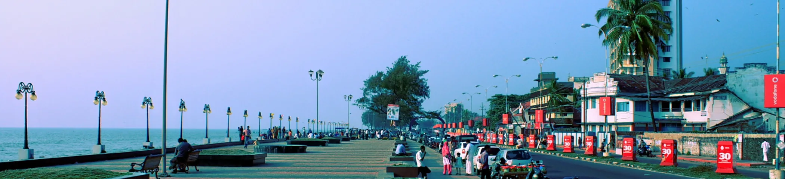

Experience A Slice Of Heaven In Kerala With These Top Kozhikod Tourist Places
1. Kozhikod Beach
Situated on the Malabar coast and endowed with natural beauty, Kozhikode beach should be a must in the itinerary of your visit to the city. This beach is renowned for the sunsets that tourists throng here to enjoy. Though the water is muddy and not suitable for swimming, still the stunning view of the Arabian Sea that the lighthouse offers more than compensates for the shortcoming.
Timings: The beach is open on all days to the tourists from 8 A.M. to 8 P.M. in the early hours visitors can see the real-life dolphin shows.
2. Mananchira
Previously known as Mananchira Maidan, this place held many football matches. Mananchira scores high as one of the places to visit in Kozhikode. This place provides tranquility to the visitors which is much sought after as one wants to escape the chaotic city life. It is a beautiful park covered with lawns, traditional buildings, a musical fountain, and an open-air theatre. This park is built around a man-made lake known as Mananchira lake.
Timings:Monday to Sunday 3:30 P.M. to 8 P.M.
3. Kadalundi Bird Sanctuary
Kadalundi Bird Sanctuary is the perfect tourist spot for bird watchers and nature lovers. Just 19 km away from Kozhikode, this bird sanctuary is home to nearly 100 species of native birds and over 60 species of migratory birds. This is situated among the clusters of small islands on river Kadalundi. This is the habitat of gulls, terns, herons, and other alien birds which are a major attraction of this sanctuary.
Timings: 8:00 AM to 6:00 PM
4. Beypore Beach
Situated near the mouth of Chaliyar river, Beypore beach is a famous tourist destination. Your visit to Kozhikode remains incomplete without a day spent at Beypore beach. There is never a dearth of activities once you are at the beach. Clearly, one of the favourite tourist places to visit in Kozhikode, this beach takes into a different world with its numerous fun-filled activities to keep you engaged as it offers abundant water activities like surfing, sunbathing, water skiing and swimming.
Timings: 24 hrs
5. Srikanteshwara Temple
Take a break from daily life and pay a visit to the Srikanteshwara Temple in Kozhikode. On your visit to Kerala, you must add this temple to your list of places to see in Kozhikode. More than a hundred years old, this temple is dedicated to Lord Shiva and is a must-visit pilgrimage of Hindus. Apart from Lord Shiva, you can worship Lord Ganapathy, the serpent Gods, and Lord Krishna.
Timings :5:00A:M: to 12:15 P:M: and from 5:00 pm to 8:00 pm